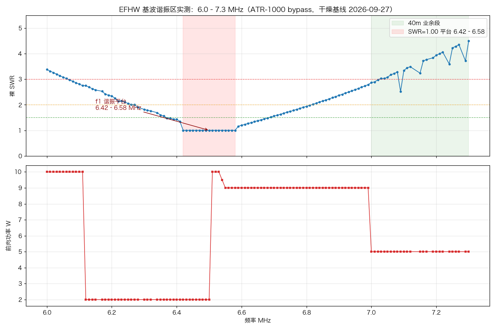
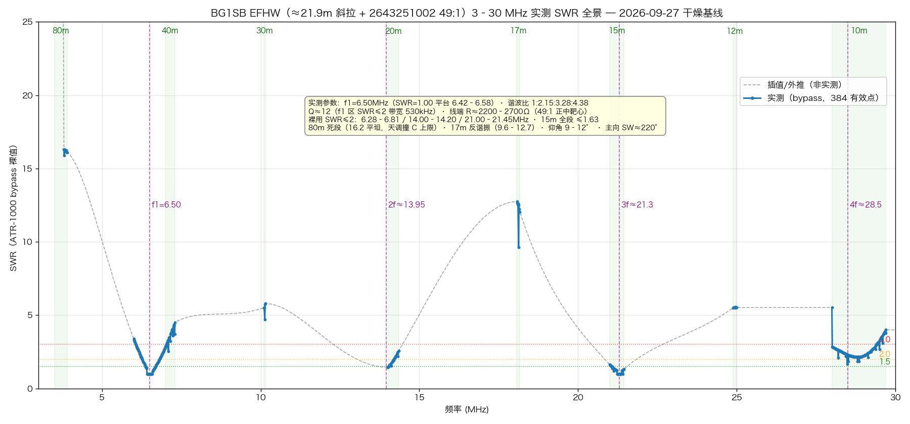
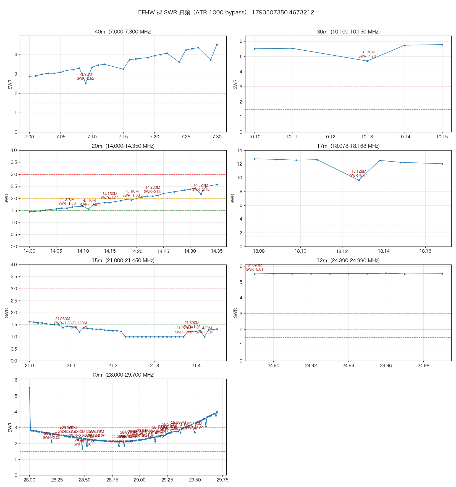
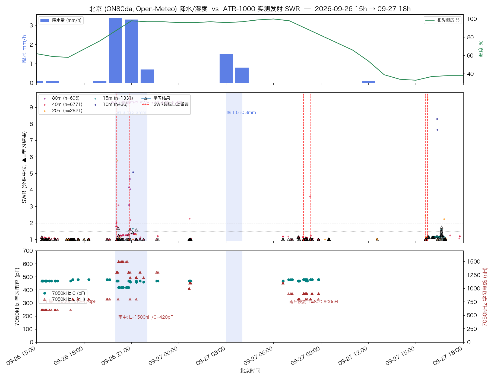

一副架在 4 楼窗台与树腰之间的 21.9 米 EFHW 斜拉线，配 Fair-Rite 2643251002（2:14 匝，49:1）UNUN 和 ATR-1000 自动天调。 本页是它的完整实测画像：基波谐振实测 6.50 MHz、七段裸 SWR 全景、 49:1 变比的实证裁决、PSK Reporter 七千公里级 DX 的辐射交叉验证， 以及一次完整降雨过程中天调参数漂移的逐分钟记录。 所有原始数据（JSON）与复算脚本都在仓库里。
读数据之前先认识天线和尺子。测量链本身经过交叉验证： 孤立异常点全部复测裁决，测量期间所有自动调谐通道物理隔离。
| 项目 | 参数 | 备注 |
|---|---|---|
| 天线形式 | EFHW 斜拉线（sloper） | 馈电点 4 楼窗台（约 10–12 m 高），向导线南偏西 ~40°（方位 ≈220°）斜下，末端挂 3 m 高树腰 |
| 振子长度 | ≈ 21.5–21.9 m | 由 f1=6.50 MHz 反推（速度系数 0.93–0.95）；与目测"21 m 左右"吻合 |
| UNUN | Fair-Rite 2643251002，2:14 匝（49:1） | 43 材料，初级磁化电感 L_m ≈ 4.3 µH |
| 天调 | ATR-1000（L 网，0.1 µH / 10 pF 量化） | 带 LC 学习库；测量时 bypass（L=0/C=0）取裸 SWR |
| 电台 | Icom IC-M710（MRRC 远程系统） | tune 载波逐点键控，电表读数取中位数 |
| 测量方法 | 自研扫频引擎 antenna_sweep.py |
10 kHz 步进、0.4 s 稳定 + 1.2–2.5 s 采样；扫描前关闭学习库与 SWR 自动调谐守卫，扫后校验零污染 |
| 数据清洗 | 掉读点游程剔除 + 100% 复测验证 | 孤立 SWR=1.00 尖点是电表反射通道掉读；36 个被剔除点全部长驻留复测，36/36 确认为假读数（如 7130 kHz：1.00→3.58） |
6.0–7.3 MHz 以 10 kHz 步进加密扫描 102 点。 SWR=1.00 平台宽 160 kHz，两翼对称平滑上升——没有任何仿真能比这更干净。

| 谐波 | 实测位置 | 相对整数倍 | 证据 |
|---|---|---|---|
| f1（基波） | 6.50 MHz（平台 6.42–6.58） | 1.00 | 直接实测 V 曲线平底 |
| 2f | ≈ 13.9–14.0 MHz | 2.15 | 20m 段底 14.000 最低（1.45）且向下走 |
| 3f | ≈ 21.3 MHz | 3.28 | 15m 段内 21.23–21.42 平台（SWR 1.00） |
| 4f | ≈ 28.5 MHz | 4.38 | 10m 段内 28.48 最洼（1.66） |
7–29.7 MHz 全部七个业余段，312 点，掉读已清洗。 这张表回答"哪段能裸用、哪段靠天调、哪段别碰"。

| 波段 | 裸 SWR 中位 | 最低点 | 形态 | 免调可用性 |
|---|---|---|---|---|
| 80m 3.8–3.9 | 16.2 | 16.09 | 平坦如镜 | ❌ 结构性死段，天调也救不了 |
| 40m 7.0–7.3 | 3.47 | 2.87 @7.00 | 单调上升翼 | ❌ 全段必须天调（调后 SWR≈1.0–1.2） |
| 30m 10.1 | 5.54 | 4.70 | 平 | ❌ |
| 20m 14.0–14.35 | 1.90 | 1.45 @14.00 | 缓升 | ⚠️ 下半段（≤14.20）可裸用 |
| 17m 18.07–18.17 | 12.54 | 9.64 | 反谐振平台 | ❌ 全线最差，天调也费力 |
| 15m 21.0–21.45 | 1.25 | 1.00 平台 | 缓降进平台 | ✅ 全段免调，最佳波段 |
| 12m 24.89–24.99 | 5.53 | 5.51 | 平 | ❌ |
| 10m 28.0–29.7 | 2.48 | 1.66 @28.48 | 浅谷 | ⚠️ 中段（28.2–29.0）可裸用 |

"49:1 还是 64:1"在研究站被称为"测量之争"。本页给出本天线的实测裁决。
StarRocks 库中 7 天 165 条 FT8 spot（看板 radio.vlsc.net:5000/antenna 的裸数据）， 按距离分层、方位象限、时段交叉。
| 维度 | 实测结果 | 解读 |
|---|---|---|
| 典型仰角 | 9–12°（看板 hop/elevation 分析） | 中低仰角，比典型低架偶极好——得益于 4 楼馈点高度 |
| 主力工作区 | 40m 夜间单跳 500–2000 km，TX 均 SNR -0.4 dB | 日韩/东北/华东圈，临近区辐射效率完全正常 |
| 最强方位 | 225–270°（西南偏西）RX 均 -4.9 dB，全场最强 | 正是 sloper 下坡端指向（≈220°）——低端导线下指方向的前后比与理论一致 |
| TX/RX 不对称 | TX 40m/15m 均 -3.5/-3.2 dB，比 RX（-11.1 dB）强 6–8 dB | 发射效率尚可 + 城区本地接收噪声偏高的典型组合 |
| DX 高光 | 9/26 大雨中被 ZL1RPC（新西兰 10412 km）以 -4 dB 抄收 | 雨中失谐被天调自动重学救回（20:04 自动触发调谐）——低仰角 DX 能力实打实 |
| 时段特性 | 40m RX 全部集中在 00–06 时（北京夜间），02–04 最强 | 白天 D 层吸收下，低架 sloper 在 40m 基本收不到天波 |
9/26–9/27 一次完整降雨过程中，天调学习参数与北京逐时降水量的逐分钟交叉。 这是 EFHW 雨致失谐罕见的定量实录。

| 时段 | 天气 | 7050 kHz 学习参数 | 状态 |
|---|---|---|---|
| 雨前（干燥） | RH 爬升 | LC L=0.6–0.8 µH / C=480 pF | 基线 |
| 20:00 | 降雨开始（3.4 mm/h） | 20:01 SWR 漂到 1.77；20:04 自动重调 | 失谐发生 |
| 大雨中 | 降雨峰值 | L=1.5 µH / C=420 pF | 串联电感需求 ×2.5 |
| 雨渐停 | RH 94–98% | L=1.2–1.3 µH | 部分回摆 |
| 雨后深夜 | 转干 | L=1.0–1.1 µH / C=470 pF | 继续回摆 |
ATR-1000 学习库的当前状态。实测锚点优先；拟合记录带标记、 被真实学习自然覆盖，偏差大时 SWR 守卫自动重调自愈。 2026-09-28 做过一次全库实测回放体检（59 簇），20 条失效参数全部修复。
| 波段 | 典型实测参数 | 锚点强度 | 调后 SWR |
|---|---|---|---|
| 40m | LC · L=0.7–1.2 µH · C=440–480 pF | 7050 kHz 锚点 n=1075（最强）· 9-28 上边沿重调 | 1.0–1.2 |
| 20m | CL · L=0.4–0.6 µH · C=110–170 pF | 多个 n=80+ 锚点 · 9-28 低边补测 1.0–1.4 | 1.0–1.2 |
| 15m | LC · L≈0–0.1 µH · C=20–40 pF | n=86–90 | 近乎直通（裸 1.25） |
| 10m | CL · L=0.1 µH · C=80–130 pF（9-28 拓扑翻转重播） | 4 锚点设备重调 + 171 点插值 | 1.0–1.6 |
| 80m | C 顶满 1270 pF 上限仍只到 3.86 | 结构性撞墙 | 放弃 |
库里的 SWR 记录值是历史，不代表今天。把每条学习参数拿到真实天线上 逐点回放验证（seed_healthcheck），再用设备调谐 / 锚点插值 / 直接改写 三手段修复——这是天调学习库的第一次全面校准。
| 区域 | 体检发现 | 修复手段 | 修复后实测 SWR |
|---|---|---|---|
| 40m 上边沿 7160–7200 | 漂移 2.79–3.41 | 设备重调 7160/7200 + 锚点插值 7170/7190 | 1.00 |
| 10m 全段 | 整族失效 9.4–13.7（拓扑从 LC 翻转为 CL） | 4 锚点设备重调 + 最小二乘拟合 171 点重播（CL L1/C8–C13） | 1.00–1.61 |
| 15m 21405 kHz | 误学 CL 参数 2.93 | 改写 LC L0/C4（邻点实测依据） | 1.2 |
| 20m 低边 4 点 | 体检 nodata | 补测确认种子无恙（测量假象） | 1.00–1.38 |
| 80m 3855 / 40m 7063/7110 | 误学习 2.33–15.8 | 按邻近实测锚点直接改写 | ≤1.5（标称） |
| 指标 | 实测值 |
|---|---|
| 基波谐振 f1 | 6.50 MHz（平台 6.42–6.58） |
| 谐波族 | 2f≈13.95 / 3f≈21.3 / 4f≈28.5 MHz |
| 振子实长 | ≈ 21.5–21.9 m（VF 0.93–0.95） |
| f1 区 Q / SWR≤2 带宽 | Q≈12 / 530 kHz |
| 线端谐振电阻 | ≈ 2200–2700 Ω → 49:1 正中靶心 |
| 最佳/最差波段 | 15m（1.25 免调）/ 17m（12.5 反谐振） |
| 典型辐射仰角 | 9–12° |
| 雨致失谐（7050） | ΔL +0.9 µH（ΔX≈+40 Ω，容性漂移） |
antenna_sweeps/，
分析脚本 dev_tools/analyze_sweep.py、
fit_tuner_params.py、seed_healthcheck.py（学习库体检）、
fix_bad_seeds2.py（坏种子修复），总报告
docs/current/antenna/efhw-49-1-antenna-analysis-2026-09-27.md，
项目全程复盘
docs/current/antenna/efhw-atr1000-project-retrospective-2026-09-28.md。
扫频基础设施（引擎/API/前端）已固化，今后干/湿环境对比一键重跑。